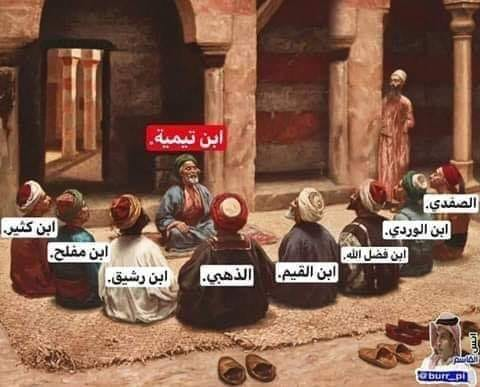

শাইখুল ইসলাম ইবনু তাইমিয়া রাহ-এর ব্যাপারে তাঁর ছাত্র হাফেজ ইমাম জামালুদ্দিন মিয্যি…
২৮ জুন, ২০২৪
শাইখুল ইসলাম ইবনু তাইমিয়া রাহ-এর ব্যাপারে তাঁর ছাত্র হাফেজ ইমাম জামালুদ্দিন মিয্যি রাহ. বলেন—
“আমি তাঁর মতো কাউকে দেখি নি এবং তিনি নিজেও তাঁর মতো কাউকে দেখেন নি। আমি আল্লাহর কিতাব ও রাসূল সাল্লাল্লাহু আলাইহি ওয়া সাল্লামের সুন্নাহ সম্পর্কে তাঁর চেয়ে বেশি জ্ঞানী এবং অধিক অনুসারী কাউকে দেখি নি।"
[তাবাকাতু উলামায়িল হাদিস, ইবনু আব্দিল হাদি— ৪/২৮৩]
শাইখুল ইসলাম ইবনু তাইমিয়া রাহ-এর ব্যাপারে তাঁর ছাত্র হাফেজ ইমাম জামালুদ্দিন মিয্যি রাহ. বলেন—
“আমি তাঁর মতো কাউকে দেখি নি এবং তিনি নিজেও তাঁর মতো কাউকে দেখেন নি। আমি আল্লাহর কিতাব ও রাসূল সাল্লাল্লাহু আলাইহি ওয়া সাল্লামের সুন্নাহ সম্পর্কে তাঁর চেয়ে বেশি জ্ঞানী এবং অধিক অনুসারী কাউকে দেখি নি।"
[তাবাকাতু উলামায়িল হাদিস, ইবনু আব্দিল হাদি— ৪/২৮৩]
